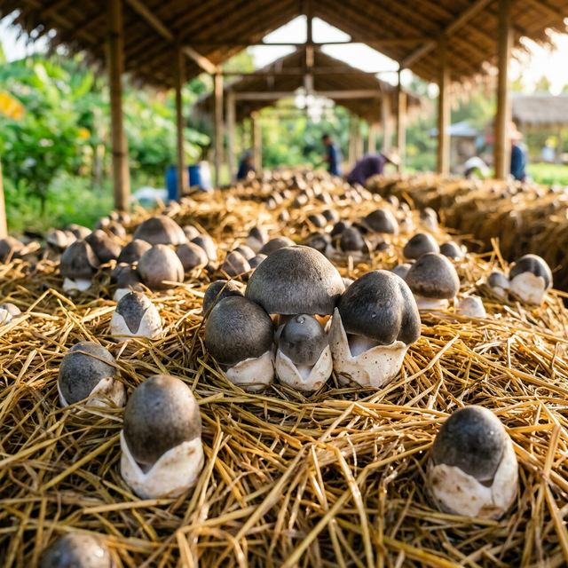

A 12-month mission to turn Thailand's rice straw from a pollution nightmare into a high-speed profit engine. As fast as fire. More profitable than rice.
Every year, millions of rai of rice straw are burned — choking cities in smog, destroying soil health, and costing farmers their future. Traditional "green" solutions cost too much and take too long.
Thai farmers burn over 10 million rai of rice straw every season, creating toxic PM2.5 smog across Southeast Asia.
Industrial pelletizers and balers cost ฿500,000+. For a small-holder farmer earning ฿8,000/rai, this is impossible.
Bio-decomposition takes 20+ days. Farmers have a 14-day window before the next crop. The math doesn't work.
We skip expensive 500K THB machinery and 20-day "slow rots" in favor of a 14-day "Biological Factory" cycle.
A tractor-mounted attachment using a salvaged boiler to blast stubble with superheated steam. Kills weeds and pests instantly like fire — but leaves the straw intact.

Immediately inoculate the steamed straw with Paddy Straw Mushroom spores. Turn waste into Thailand's next cash crop.
Traditional rice yields ฿8,000/rai. Adding mushroom cultivation to the same straw transforms the economics overnight.
Full harvest cycle, fits before next rice planting
DIY Steam-Blast setup cost (shared across village)
Additional revenue vs. rice-only farming
Eligible for carbon credit revenue streams
Three phases. One year. From prototype to national standard.
Partner with local engineers (L C Central Service) and CMU Engineering Faculty to build and test the DIY Steam-Blast tractor attachment.
Launch in one village to prove the ฿30K/rai profit model. Document everything. Create the playbook other villages can replicate.
Leverage "1 Tambon 1 Digital" and Carbon Credit frameworks to roll out across Thailand. Make "Zero-Burn" the national standard.
Traditional "green" plans fail because they cost farmers money. This wins because it makes them richer.
You aren't asking farmers to "save the planet" — you're showing them how to stop burning their paycheck.
Built with local engineers for ฿20K, not imported machines at ฿500K. Repairable by any village mechanic.
Fits the real farming calendar. No lost planting windows, no production delays, no excuses.
One Steam-Blast unit shared across a village. Costs split. Benefits multiplied. Everyone wins.
Whether you're a farmer, engineer, investor, or government official — there's a role for you in the Zero-Burn revolution.